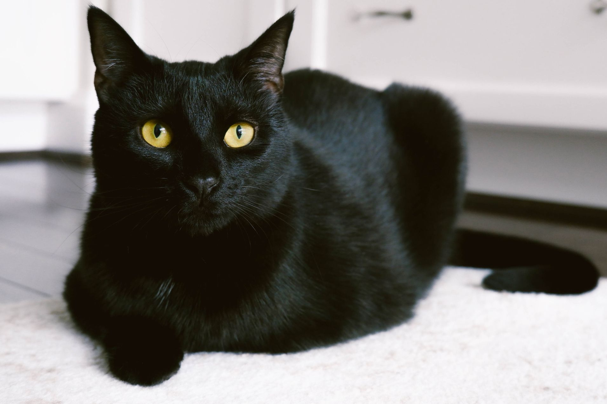

Welcome!
This is my website all about cats

Calico Cats
They're my favourite, they're just so photogenic!
Kittens
The cutest floofballs ever!
This is my website all about cats
They're my favourite, they're just so photogenic!
The cutest floofballs ever!
fur type, usually refers to what kind of fur pattern/length the cat has, whereas cat breed means the type of cat, based on the face shape, body type, fur length and colour. Meaning that while a breed can have a spefic fur type, the fur type itself does not mean a spefic breed.
Cat fur can be short, long, curly, or hairless. Most cats are short-haired, like their ancestor. The fur can naturally come in three types of hairs; guard, awn, and down hair. The length, density and proportions of these three hairs varies greatly between breeds, and in some cats only one or two types are found.
There are four basic types of coats cats can have: long, short, curly, and no hair. Since some types of coat fur are the result of recessive genes (such as long hair) and specific mutations (curly and no hair) the type of coat may be a helpful indicator of your cat's breed

This breed is characterised by it's long coat. which is long and thick, standing off from the body. They have a short and board body type, round face and ears are a common trait, usually making them appear 'grumpy'.
These cats are clam and quiet, usually perfering quiter surroundings and a calm household. these cats are usually less active, prefering to laze around and be affectionate.
grooming - these cats need constant grooming for their long coats, it is also recommended to give them regular baths. health issues - these cats have a flattened face, which often results in eye damage or problems, they are also prone to Polycystic Kidney Disease.
read more about persians here
This breed is characterised by it's lack of fur. However, that does not mean that all of them are completely bare, as most have a layer of downy fuzz over their bodies. Their skin is usually wrinkled, which can be seen on the head and neck, and are usually 'flesh' colour, but can also be different colours and patterns.
These cats thrive on attention and affection, often perfering human interaction and companionship. They also get along with other pets, such as dogs. These cats crave warmth! and will usually seek out wherever is warmest, which includes your shoulders and lap.
these cats need regular baths to keep their skin clean and healthy. They need a warm enviroment, as their lack of coat means they do not retain heat, meaning you need to ensure they have warm places to be if you live in a cold climate.
read more about Sphynx hereThis is when a cat doesn't fit into one particular, for various reasons, most commonly because their leneage is unkown, then they are refered to as Domestic cats. However, this is then broken down into three breeds, domestic longhair, domestic medium hairs and finally domestic shorthairs.
These cats are mixed bag of personalities, as they come from a wide genetics pool, however, they are known for their adaptability and verastility.
These cats ahve a thick double coat of fur, which means that they needs weekly brushing, more often during shedding periods. These cats don't have any set health issues, regular vet visits is still recommended.
read more about Domestic Longhair here
This breed is characterised by a folded ear that appears when they are over three weeks old, meduim sized cats. They usually have expetionally soft fur, and can be long-haired or short-haired.
These cats are playful and unqiue, often sitting upright, standing on their rear paws, laying flat on their backs and putting thier paws up in the air. They also thrive on the attention of humans and love getting affection.
While most Scottish fold cats live long and healthy lives, they are prone to Osteochondrodysplashia, or OCD, which is a degenerative joint condition, that results in the folded ears of the scottish fold.
read more about Scottishfold hereThis breed is characterised by its sleak jet black fur, round head and ears and finally its striking copper eyes. These cats are usually meduim sized aswell.
These cats are mischievous, outgoing, highly intelligent (usually around self-entertainment) and friendly. These cats usualyl get along with other pets and other humans, so they are a great choice for first time cat owners.
These cats need to be brushed once a week, but other then that no common health issues related to the breed.
read more about Bombay here This breed is characterised by it's large size, males often growing to 14-20 pounds, while females usually grow to 10-14 pounds. This cat also has a large thick and luscious coat, robust physique and comes in a variety of colours and patterns.
This breed is known for its playful nature, energetic spirit and loyalty. They are usually reserved around strangers, but are kind and affectionate to those they know and trust.
These cats are usually resilient and healthy. Their fur also does not tangle or knot easily, meaning a simple brushing once a week will do these cats. However, they are usually prone to hip dysplasia and cardiomyopathy
read more about Main Coone here